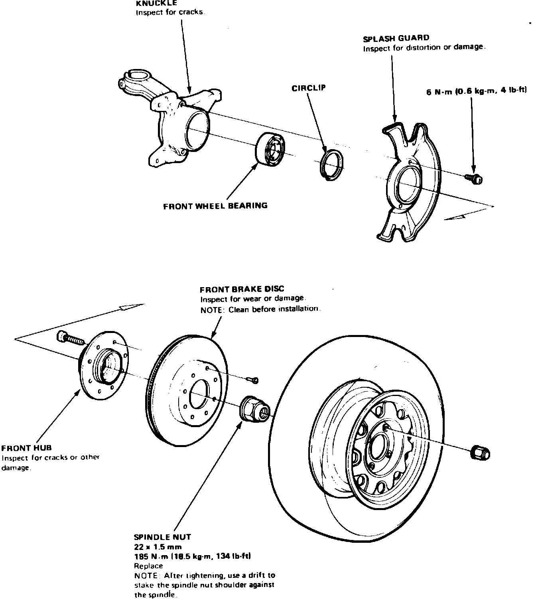

Front
Fig. 6 Steering knuckle & hub assembly. Integra:

1. Remove spindle nut locking device, then loosen spindle nut, Fig. 6.
2. Loosen wheel lug nuts.
3. Raise and support front of vehicle, then remove front wheels and spindle nut.
4. Unfasten caliper and position aside, leaving brake line attached. Do not allow caliper assembly to hang from brake hose.
5. Remove brake disc attaching screws, then thread two 8 x 1.25 x 12 mm bolts into attaching screw holes to pull disc from hub. When tightening screws, turn only two turns at a time to prevent cocking the brake disc.
6. Remove tie rod end cotter pin and nut.
7. Disconnect tie rod end using suitable tie rod end remover.
8. Support lower control arm using a suitable jack.
9. Remove lower ball joint cotter pin and nut, then pry ball joint out of steering knuckle.
10. Remove self-locking bolt, then tap steering knuckle down until it clears the damper.
11. Pull driveshaft out of steering knuckle, then remove the hub and knuckle assembly.
12. Remove splash guard attaching screws and the splash guard.
13. Remove hub from steering knuckle using a suitable press.
14. Reverse procedure to install.